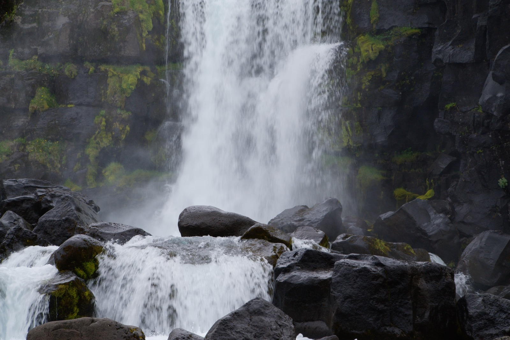

A road trip around the island
Iceland
Prologue
days around the island. Highland fog, black sand, a lagoon full of ice. frames on digital, on film.
- Days
- 0
- Kilometres
- 0
- Digital frames
- 0
- Film frames
- 0
(01) — Photo Map
Nine days, one ring road.
Day 01
0 km driven
(02) — Lightbox